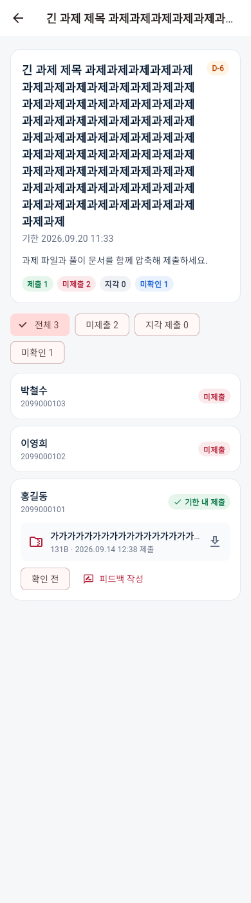
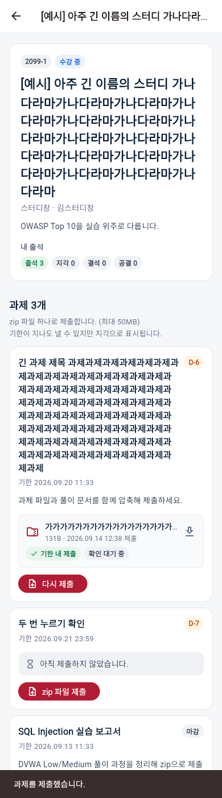
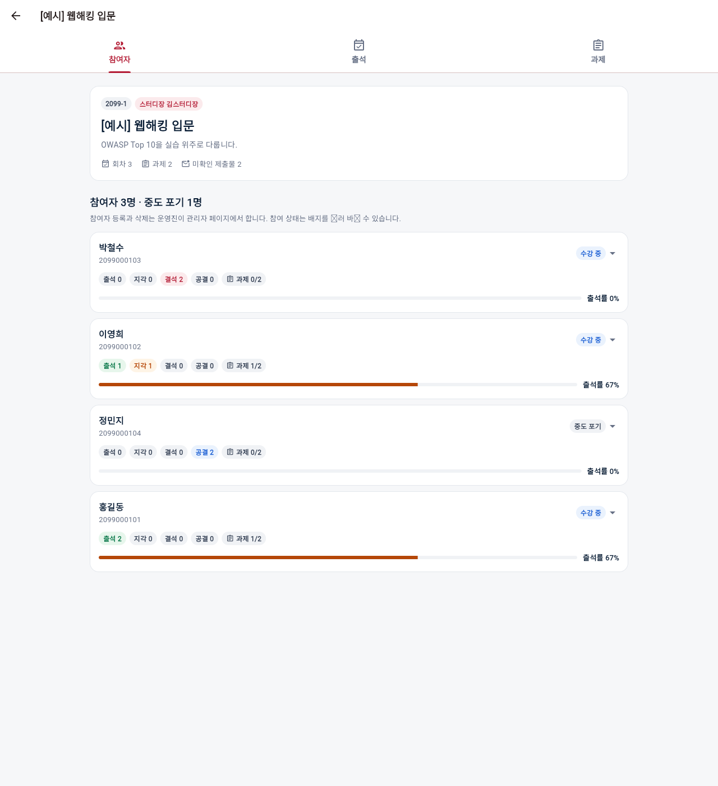
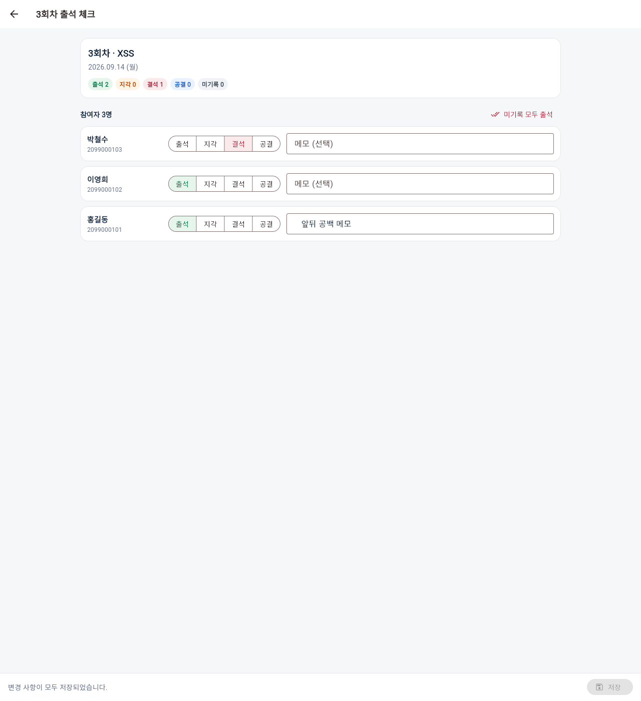
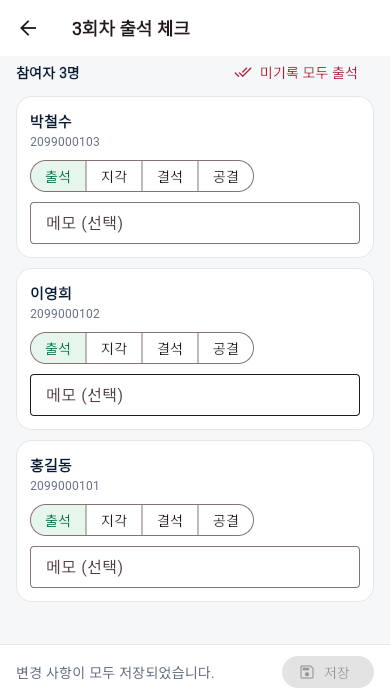

1ae09ee)seed_demo 가상 데이터를 쓰고, 구역마다 DB·업로드 파일을 처음 상태로 되돌린 뒤 시작.| 항목 | 증상 | 원인 · 수정 | 확인 |
|---|---|---|---|
| E-21 | 출석 메모를 앞뒤 공백과 함께 저장하면, 서버에는 공백을 지운 값이 저장되지만 웹 화면 입력칸에는 공백이 남은 채 보임 (화면을 다시 열면 정상) | 메모 칸에 초점이 남아 있으면 웹에서 새 값이 화면에 반영되지 않음. 위젯 테스트에서는 재현되지 않는 웹 전용 문제. 저장 전에 초점을 풀도록 수정 — 1ae09ee | 수정 후 통과 실제 크롬 재점검 + 프론트 테스트 37개 · analyze · format 통과 |
| 항목 | 결과 | 근거 |
|---|---|---|
| C-01~C-03 | 통과 | 상단 버튼·홈 패널·마이페이지 패널로 관리 화면 진입, 선택 시 진한 빨강 채움(캡처), 카드 → 탭 화면 → 뒤로 시 목록 다시 불러옴 |
| C-04 | 통과 | 탭 누르기와 터치 스와이프로 이동, 이전 탭 내용 남지 않음. 참고: PC에서 마우스로 끌어서는 넘어가지 않음(Flutter 기본 동작) |
| C-05~C-09 | 통과 | 출석 체크·제출 현황·참여자 스터디 상세 진입과 ←, 변경 없으면 확인 창 없음, ⋮ 메뉴는 카드로 들어가지 않음, 완료한 스터디·과제 제출 현황 줄에서도 상세 진입 |
| C-10 | 직접 | 브라우저 자체 뒤로가기는 자동으로 판정 불가 → M-05 |
| C-11~C-14 | 통과 | 새로고침 시 홈·로그인 유지(알려진 한계), 로그아웃 시 홈으로, 휴대폰 서랍 이동·닫힘·선택 강조(캡처), About·Study·Activity·Board·Contact 내용과 콘솔 오류 없음 |
| 항목 | 결과 | 근거 |
|---|---|---|
| D-01~D-13 | 통과 | 카드 문구·수치(중도 포기 제외 3명, 미확인 2), 운영진은 전체, 학기 칩 필터, 폭 1280/800/390에서 3/2/1열·넘침 없음, 목록 불러오기 실패→다시 시도 복구, 참여자 이름순·학번 전체·출석률 67/67/0/0%와 막대 색(캡처), 상태 변경 체크 표시·알림, 중도 포기 확인 창 취소/변경, 빈 스터디 안내, Admin에서 추가한 참여자 즉시 반영 |
| 항목 | 결과 | 근거 |
|---|---|---|
| E-01~E-13 | 통과 | 현황표 값·범례·툴팁 라벨, 회차 순서·배지·날짜 형식, 회차 추가 기본값 4·한국어 달력·날짜 선택 반영, 숫자만 입력·1 이상·중복 번호 오류, 한글 주제 저장, 100자 제한, 수정·삭제(기록 4건 안내, 출석률 재계산 33%), 회차 13개일 때 표만 가로 스크롤(캡처), 빈 스터디 안내 |
| E-14~E-15, E-17~E-20 | 통과 | 첫 화면 요약·중도 포기자 제외·저장 버튼 비활성, 같은 버튼 다시 누르면 해제, 200자 제한, 변경/되돌림에 따른 저장 상태 표시, “미기록 모두 출석”이 기존 선택 유지 |
| E-16 | 직접 | 한글 문장 입력값은 정확히 저장·표시됨. 입력기 조합(자모 분리·커서 튐)은 자동 불가 → M-01 |
| E-21 | 수정 후 통과 | 버그 참고. 수정 후 서버·화면 모두 “앞뒤 공백 메모” |
| E-22~E-26 | 통과 | 저장 후 회차 배지·현황표 반영, 저장 안 하고 나가기 확인 창(취소 시 유지, 나가기 시 버림), 기록 있는 중도 포기자 표시, 넓은 폭 한 줄·좁은 폭 세 줄 배치, 끝까지 내리면 마지막 카드가 저장 막대에 가리지 않음(캡처), 저장 실패 시 “출석을 저장하지 못했습니다.”와 입력 유지 → 재시도 성공 |
| 항목 | 결과 | 근거 |
|---|---|---|
| F-01~F-03, F-05~F-09 | 통과 | 탭 순서·배지 수치, 기본 기한(7일 뒤 오후 11:59)과 폭별 날짜·시각 배치, 제목 비움·공백만 거절(요청 0건), 150자 제한, 지난 날짜 경고, 한글 제목·여러 줄 설명·링크 등록, 수정 창 값 유지와 서버 기한 23:59:00+09:00 |
| F-04 | 직접 | 시계 선택창이 한국어(오전/오후, 취소/확인)로 뜨는 것까지 확인. 다이얼·입력 모드로 시각 바꾸기는 → M-02 |
| F-10~F-15 | 통과 | “1시간 남음”·“20분 남음”·“D-99+” 표시(기한은 API로 바꿔 표시만 확인), 기한 3일 전 수정 시 지각 1→2와 다음 주로 옮기면 지각 사라지고 위로 이동, 삭제 확인 창·제출 파일 2개 → 0개 삭제, 빈 스터디 안내, 390px에서 긴 설명 입력 시 저장·취소 버튼 보임 |
| 항목 | 결과 | 근거 |
|---|---|---|
| G-01~G-15 | 통과 | 요약 카드와 링크 밑줄(캡처), 칩 숫자와 필터 결과 일치, 파일 박스를 누르면 원본 이름 홍길동_SQLi.zip으로 내려받아지고 내용 일치, 확인/해제 시 요청 1건·확인자 표시·실패 알림 없음, 피드백 창 구성, 한글 여러 줄 피드백 저장(서버 값 일치), 확인 표시 해제 후 저장, 기존 피드백 채워짐·지우면 박스 사라짐, 취소 시 요청 없음, 필터 결과 없음 안내, 중도 포기자 행 표시, 뒤로 가면 과제·목록 수치 갱신 |
| 항목 | 결과 | 근거 |
|---|---|---|
| H-01~H-08 | 통과 | 네 카드 문구, 박철수 제출할 과제 1개, 390px 한 열·버튼 넘침 없음, 상세 요약·안내·과제 순서·박스/버튼 상태, 기한 지난 미제출 표시, 출석 목록에 스터디장 메모 노출 안 됨 |
| H-09, H-10 | 직접 | 설명 속 링크 글자 위치를 자동으로 맞추지 못함 → M-03 · 운영체제 파일 선택창의 취소 버튼 → M-04 (선택창 필터 .zip과 빈 선택 시 아무 일 없음은 확인) |
| H-11~H-17 | 통과 | 확인 창 “파일명 (131B)”, 느린 업로드를 흉내 내 “올리는 중…”·다른 버튼 잠금 확인, 한글·공백 파일명 multipart 전송, txt·빈 파일·가짜 zip·60MB 사전 차단(요청 0건), 깨진 zip 서버 거절, 기한 지난 재제출 안내 2가지·지각 표시·피드백 유지, 서버의 기존 파일 교체 |
| H-18~H-26 | 통과 | 확인 완료·피드백 표시, 내 파일 받기 내용 일치, 제출 실패 알림 후 버튼 복구, 제출 후 “제출할 과제 없음”, 수료 시 버튼 사라짐·안내·완료한 스터디 이동, 40MB 업로드 서버 크기 일치·카드 반영(로컬은 빨라 진행 표시는 L-05에서), 스터디장↔참여자 제출·피드백·출석 연결 |
| 항목 | 결과 | 근거 |
|---|---|---|
| I-01~I-10 | 통과 | 계정별 API 직접 호출: 비담당 403 문구, 정회원 403, 비로그인 403, 운영진 전체 200, 제출 파일 다운로드 권한 6계정, 비참여 404, 공개 API 학번 전체 미노출, 참여자 응답에 메모 없음. I-10은 백엔드 자동 테스트 80개 통과로 갈음 |
| J-01~J-05 | 통과 | 게시판 제목·빈 안내 3종, 1440px에서 내용 왼쪽 정렬(x=154), 홈 제목이 1280에서 두 줄 큰 글자·390/360에서 두 줄 작은 글자(캡처), 스터디 페이지 불러오기 실패→다시 시도, KUICS NOW 공지·스터디 카드 이동 |
| J-06~J-11 | 통과 | Admin 메뉴에 새 모델 4개·예전 모델 없음, 스터디 수정 화면 인라인 3종, 제출물 목록·상세(추가 버튼 없음, 다운로드 링크, 크기 표시, 파일 칸 수정 불가), 출석 추가 화면 자동완성 검색, 과제 작성자 읽기 전용, 운영진 지정/해제와 스터디장 등급 동기화 |
| K-01~K-04 | 통과 | 오류 화면 7곳(홈 패널·스터디 관리·현황표·출석 체크·제출 현황·마이페이지·스터디 상세) 모두 오류 표시 후 복구, 저장 버튼 더블클릭 시 요청 1건씩(회차·출석·과제·피드백), 다른 탭 로그아웃 후 조작 시 화면 유지·오류 알림, 긴 제목·파일명 말줄임과 가로 넘침 없음(관찰 Q-01 참고) |
| K-05 | 직접 | 한글 입력기 조합 → M-01 |
| K-06~K-08 | 통과 | 화면 12개 × 폭 4가지 가로 넘침 없음(대표 캡처 확인), 새 화면 문구 전체 검토(오타 없음), 날짜 표기 26개 모두 2026.09.14 · (월) · 23:59 형식 |
| 항목 | 결과 | 근거 |
|---|---|---|
| L-01~L-09 | 직접 | 실제 Render·Vercel과 운영 DB에서만 확인 가능. 운영 데이터를 건드리지 않기 위해 자동 점검하지 않음 |
직접 확인할 항목 체크리스트의 3번 구역(Q-01~Q-04)에서 ✔/✖로 알려주세요.





{kind=link}
{kind=link}
{kind=link}
{kind=link}
{kind=link}